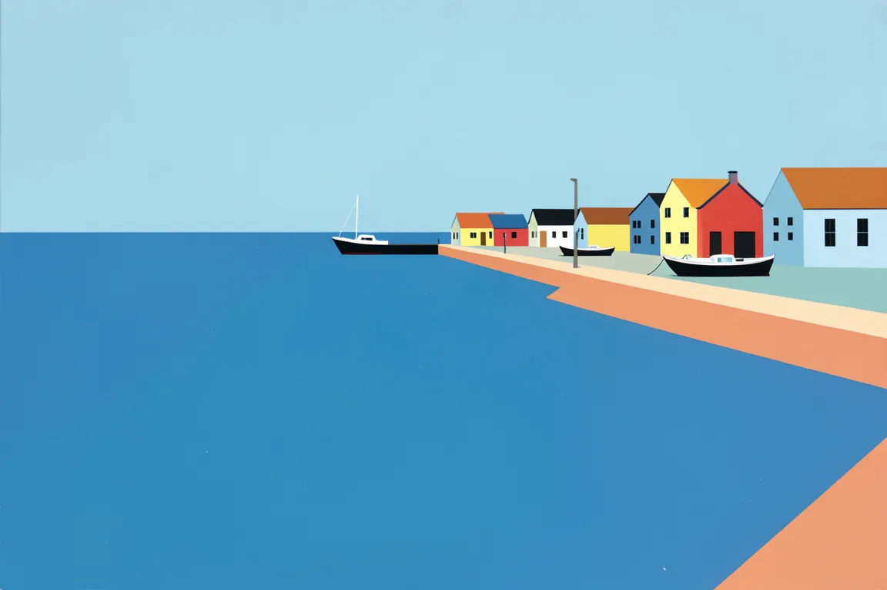

Плоские точные повторяющиеся формы: полосы, сетки и голые фигуры в одном-двух цветах. Картина — предмет без истории и без руки, и зритель видит то, что есть.

Главная идея
Картина — простой предмет: что видишь, то и есть, поэтому форма сводится к наименьшему числу частей, и не остаётся ни иллюзии, ни жеста, ни истории.
Принципы дизайна
Сводите картину к 1–3 элементам: полосе, сетке, брусу или одной фигуре.
Повторяйте одну единицу, например полосу 40–80 мм, 8–40 раз в строгом порядке.
Кладите плоские ровные слои без мазка и держите край чётким до долей миллиметра.
Ограничьте цвет 1–3 тонами или чёрным, серым и белым, без смешения и градиента.
Пусть форма холста следует узору: подходит ступенчатая, фигурная или очень широкая основа.
Фиксируйте систему до начала работы и следуйте ей без изменений по вкусу.
Не давайте картине названия, рассказывающего историю, и следа руки.